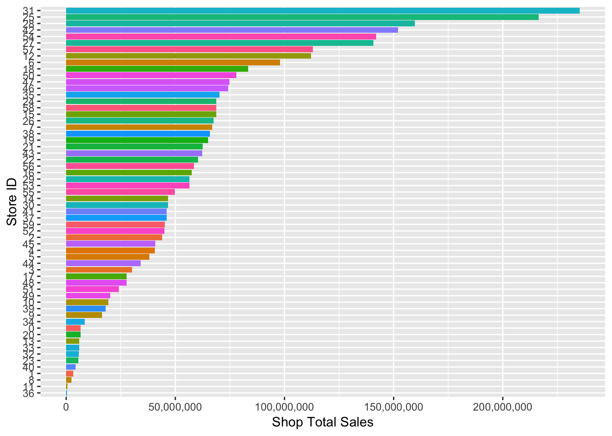
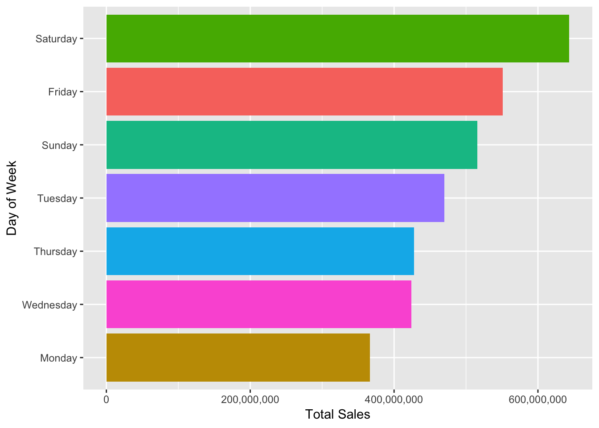
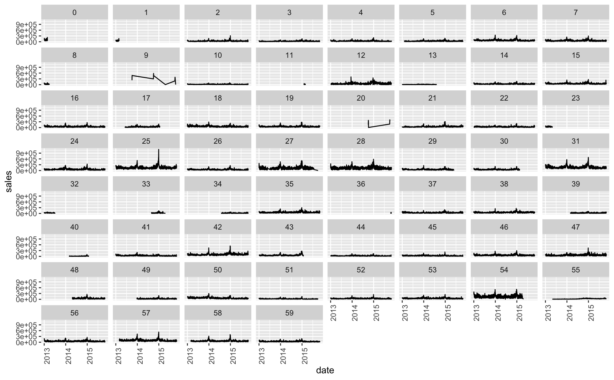
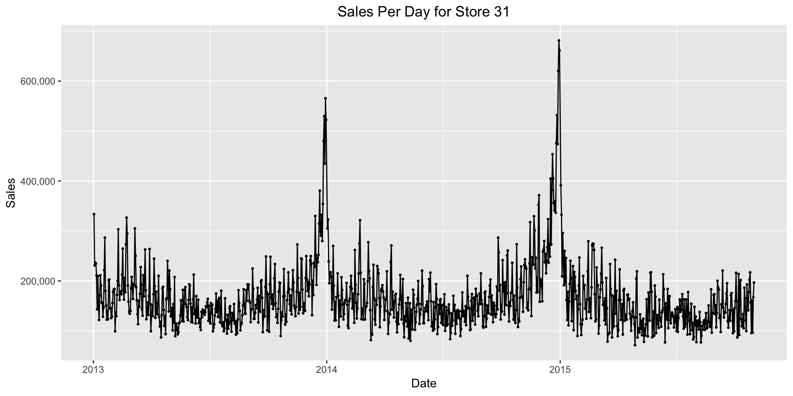
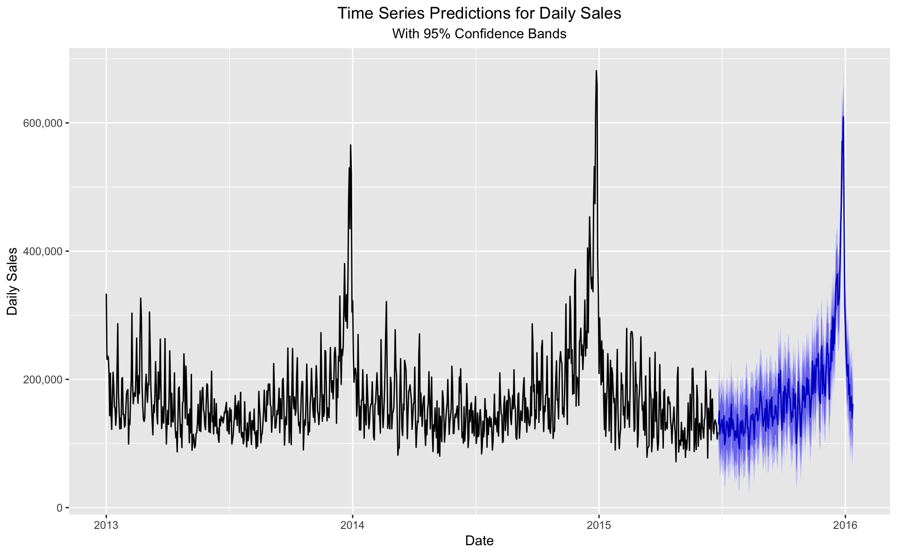

The purpose of this kaggle competition https://www.kaggle.com/c/competitive-data-science-predict-future-sales/overview/evaluation is to create a time series to predict daily sales for each product and store for a Russian based software firm - 1C company. Below we have a exploratory data analysis.
First we want to take a look at the type of data we are working with for this analysis. Below is a sample of 5 observations where we have the date, date block, shop id, item id, item price, and how many items were sold at that shop that day.
| date | date_block_num | shop_id | item_id | item_price | item_cnt_day |
|---|---|---|---|---|---|
| 2013-12-11 | 11 | 50 | 2458 | 299 | 1 |
| 2013-05-21 | 4 | 35 | 7911 | 899 | 1 |
| 2013-02-04 | 1 | 54 | 18633 | 399 | 2 |
| 2014-05-05 | 16 | 44 | 1305 | 299 | 1 |
| 2013-01-03 | 0 | 53 | 2252 | 599 | 1 |
Summary statistics for our data.
| date | date_block_num | shop_id | item_id | item_price | item_cnt_day | |
|---|---|---|---|---|---|---|
| Min. :2013-01-01 | Min. : 0.00 | Min. : 0 | Min. : 0 | Min. : -1.0 | Min. : -22.000 | |
| 1st Qu.:2013-08-01 | 1st Qu.: 7.00 | 1st Qu.:22 | 1st Qu.: 4476 | 1st Qu.: 249.0 | 1st Qu.: 1.000 | |
| Median :2014-03-04 | Median :14.00 | Median :31 | Median : 9343 | Median : 399.0 | Median : 1.000 | |
| Mean :2014-04-03 | Mean :14.57 | Mean :33 | Mean :10197 | Mean : 890.9 | Mean : 1.243 | |
| 3rd Qu.:2014-12-05 | 3rd Qu.:23.00 | 3rd Qu.:47 | 3rd Qu.:15684 | 3rd Qu.: 999.0 | 3rd Qu.: 1.000 | |
| Max. :2015-10-31 | Max. :33.00 | Max. :59 | Max. :22169 | Max. :307980.0 | Max. :2169.000 |
- The dates for these data range from Jan 1 2013 to Oct 10 2015.
- There are 60 shops where the store id goes from 0 - 59.
- There are 22,170 different items for sale that range from 0 - 22,169.
- The item price varies from -1(maybe incorrect) to 307,980 with an average sale price of 890.9.
- The number of specific items sold in a day range from -22 (22 returns) to 2169 units sold.
Number of observations in our data.
| Number of Rows |
|---|
| 2,935,849 |
- We have 2,935,849 rows in our dataset.
In total there are 60 stores that are run by 1C company. What are the top stores in terms of overall sales?

- The average store appears to have around 50,000,000 in sales.
- Store 31 had the highest sales of all 60 stores.
- Stores 31 and 25 have almost 4 times the sales of the average store. (200,000,000 vs 50,000,000)
Do what days of the week people are shopping?

- The highest sales occur for 1C on the weekends with the busiest day being Saturday.
- Monday is the slowest day by a good margin.
What are the top 10 categories of items being sold?

- For 1C it appears that movies and video games are the biggest in terms of units sold.
What are the top 10 categories for dollars made on items sold?

- For dollar amounts, video games take the cake with the to 5 sales being video game products.
- This makes sense as video games are higher dollar when compared to video games, but had similar units sold.
Time series for all 60 stores

- There is a lot going on in these charts. These show all 60 stores and their sales every day between 2013 and 2015.
- The big take away from this graph is that some of the stores were not open for the whole time period (maybe closed down, maybe not reporting numbers)
- Stores 0, 1, 8, 23, and 32 apper to have shut down early 2013.
- Stores 34, 36, 39, 48 and 49 appear not to have opened until after the inital date.
Let’s zoom in and take a look at one store, here are sales per day for store 31

- For store 31, at the end of year time sales almost triple the average for the rest of the year.
Predicting sales for the next 200 days.

- We predicted total daily sales for the next 200 days using the ARIMA model.
- This model takes into account seasonality for our increased sales at the end of the year.
- We have a 95% confidence band around our predictions.